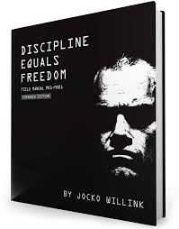
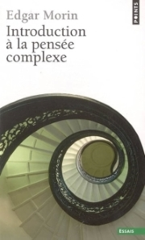
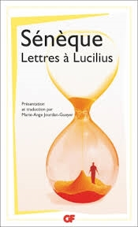

My top 3 best lectures
among thousands of readings...
Jocko Willink
Discipline equals freedom

THE book to read to become the best version of yourself.
Edgar Morin
Introduction à la pensée complexe

To cultivate one's critical thinking.
Sénèque
Lettres à Lucilius

offers timeless reflections on life, still relevant in the modern world.